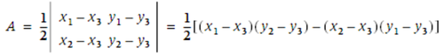

In cartoons, the moment of discovery is depicted as a light bulb turning on in a thought balloon. In my experience, that sudden flash of understanding feels more like being thumped in the back of the head with a two-by-four. When you wake up afterwards, you've learned something, but by then your new insight is so blindingly obvious that you can't quite believe you didn't know it all along. After a few days more, you begin to suspect that maybe you did know it; you must have known it; you just needed reminding. And when you pass the discovery along to the next person, you'll begin, "As everyone knows…."
That was my reaction on reading Jonathan Shewchuk's "Lecture Notes on Geometric Robustness." He gives a collinearity algorithm that, once I understood it, seemed so natural and sensible that I'm sure it must have been latent within me somewhere. The key idea is to work with the area of a triangle rather than the perimeter, as in triangle-collinear. Clearly, the area of a triangle is zero if and only if the triangle is a degenerate one, with collinear vertices. But measuring a function of the area rather a function of the perimeter has two big advantages. First, it can be done without square roots or other operations that would take us outside the field of rational numbers. Second, it is much less dependent on numerical precision.
Consider a family of isosceles triangles with vertices (0 0), (x 1), and (2x 0). As x increases, the difference between the length of the base and the sum of the lengths of the two legs gets steadily smaller, and so it becomes difficult to distinguish this very shallow triangle from a totally flattened one with vertices (0 0), (x 0), and (2x 0). The area calculation doesn't suffer from this problem. On the contrary, the area grows steadily as the triangle gets longer (see Figure 33-5). Numerically, even without exact arithmetic, the computation is much more robust.
How to measure the area? The Euclidean formula 1/2bh is not the best answer, and neither is the trigonometric approach. A far better plan is to regard the sides of a triangle as vectors; the two vectors emanating from any one vertex define a parallelogram, whose area is given by the cross product of the vectors. The area of the triangle is just one-half of the area of the parallelogram. Actually, this computation gives the "signed area": the result is positive if the vertices of the triangle are taken in counterclockwise order, and negative if taken in clockwise order. What's most important for present purposes, the signed area is zero if and only if the vertices are collinear.
The vector formula for the area is expressed most succinctly in terms of the determinant of a two-by-two matrix:

Because I'm interested only in the case where the determinant is zero, I can ignore the factor of 1/2 and code the collinearity predicate in this simple form:
(defun area-collinear (px py qx qy rx ry) (= (* (- px rx) (- qy ry)) (* (- qx rx) (- py ry))))
So, here it is: a simple arithmetical function of the x-and y-coordinates, requiring four subtractions, two multiplications, and an equality predicate, but nothing else—no ifs, no slopes, no intercepts, no square roots, no hazard of divide-by-zero errors. If executed with exact rational arithmetic, the procedure always produces exact and correct results. Characterizing the behavior with floating-point arithmetic is more difficult, but it is far superior to the version based on comparing distances on the perimeter. Shewchuk provides highly tuned C code that uses floating-point when possible and switches to exact arithmetic when necessary.